Graphic Design · Visual Identity · Promotional Design
Zaparz.to — Visual Identity & Promotional Design
Banner compositions, logo studies, social covers, a draft leaflet, and loyalty-card concepts for a tea and coffee brand.
Project
Brand visuals and promotional materials.
Format
Digital banners, social covers, and print concepts.
Status
Current visual direction alongside labelled concept studies and draft print materials.

Main Banner
A warm cream composition places the brand name between coffee and tea imagery. The phrase “Zaparz coś dobrego” connects the visual identity to the website's tea and coffee theme.
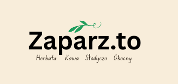
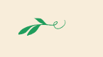
Logo & Leaf Symbol
The logo study combines a clear wordmark with a small green leaf. The symbol is shown separately as a supporting visual element.
Original concept artwork is preserved, including its working descriptor line.
Social Media Covers — Concept Studies
Green and coffee-coloured cover studies use the same layout, line illustrations, and typography. The four colour studies use the current name “Zaparz.to”.
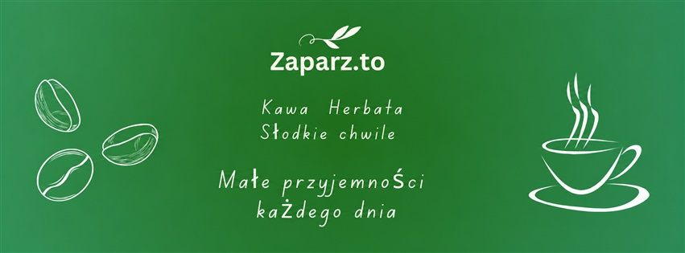
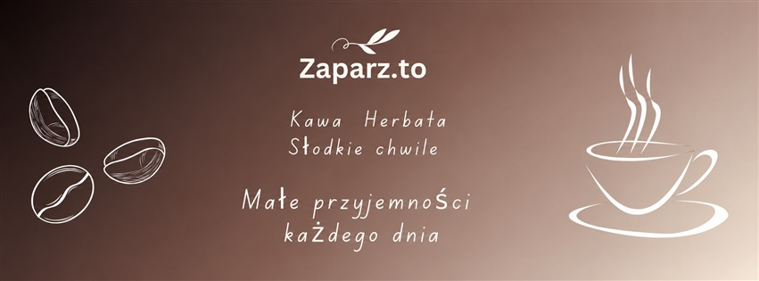
Additional colour studies
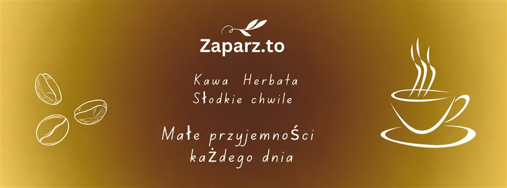
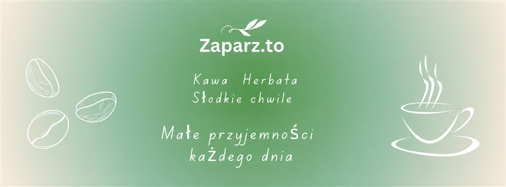
Two-Sided Leaflet — Draft Concept
The front introduces the product range; the reverse presents a first-purchase gift concept and an online call to action.
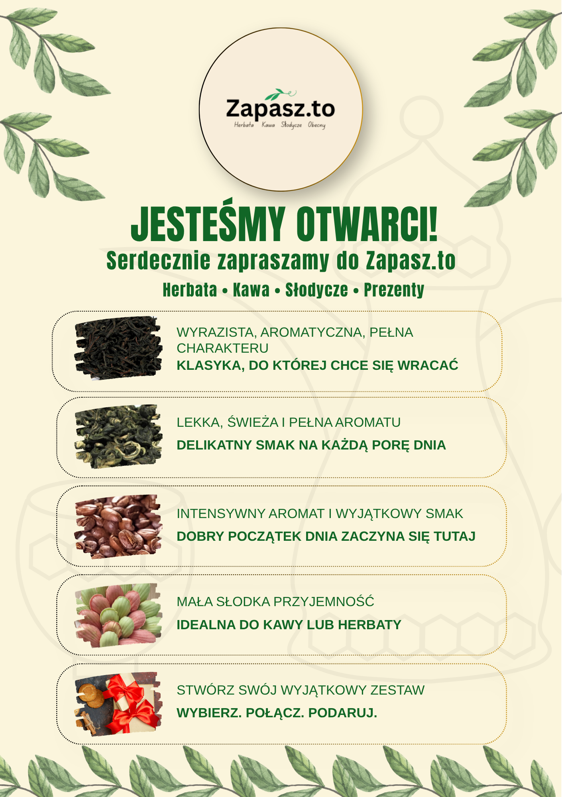
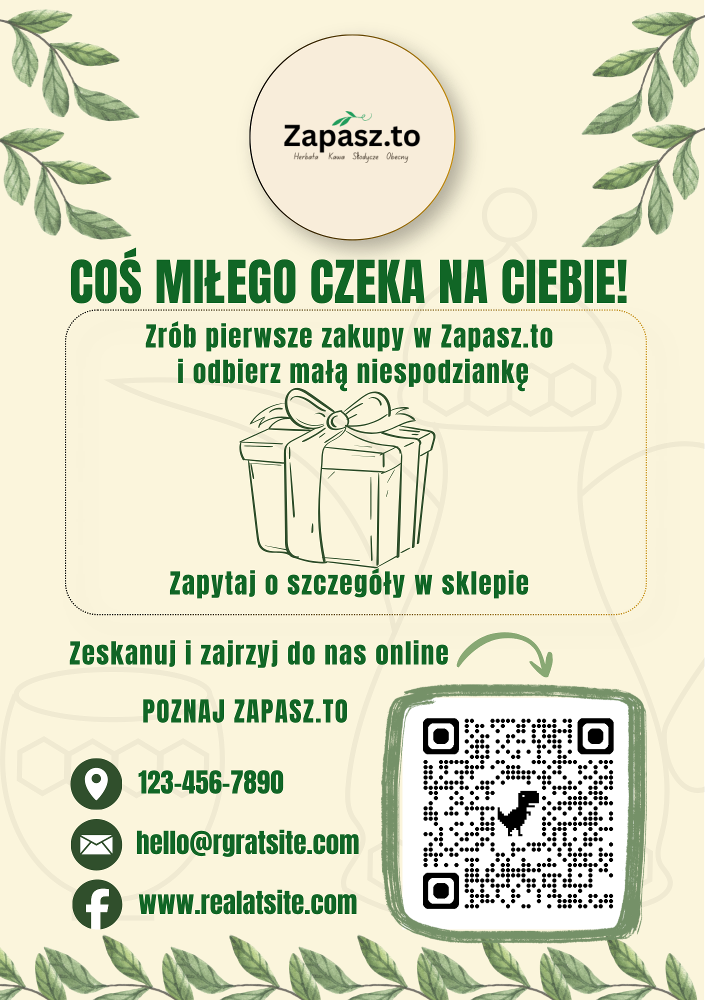
Draft concept shown with the working name, original working copy, placeholder contact details, and an illustrative QR code. This is not a final print-ready version.
Loyalty Cards — Concepts
One shared front and two reward variants.
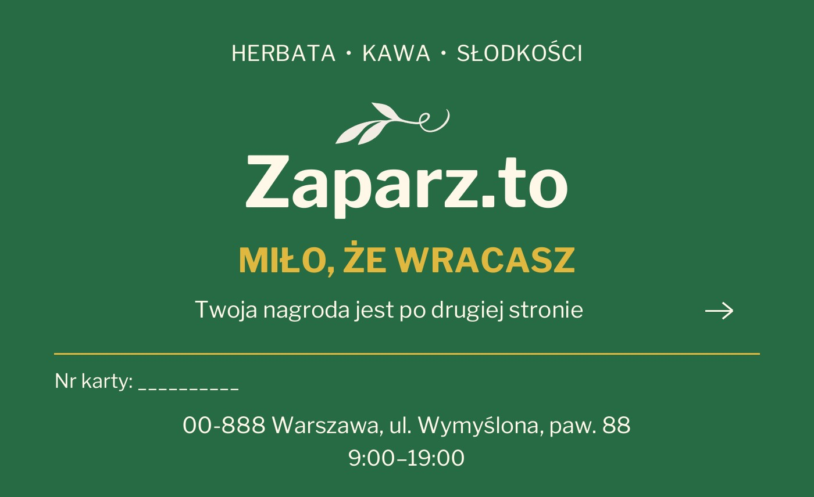
Shared Front
The shared front combines the brand name and leaf symbol with a welcome-back message. A dark-green background, cream lettering, and a gold accent connect both reward variants.
The arrow directs the customer to the reward details on the reverse. A card-number field provides space to identify the card.
Two Reward Variants
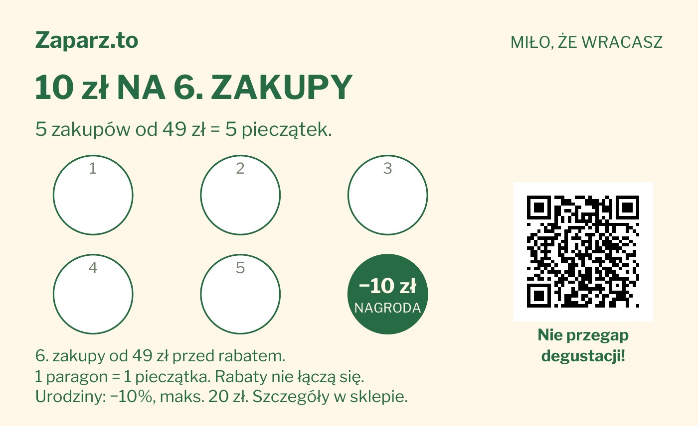
Shopping Rewards
Five qualifying purchases earn five stamps. The sixth purchase receives a 10 zł discount, subject to the conditions shown on the card.
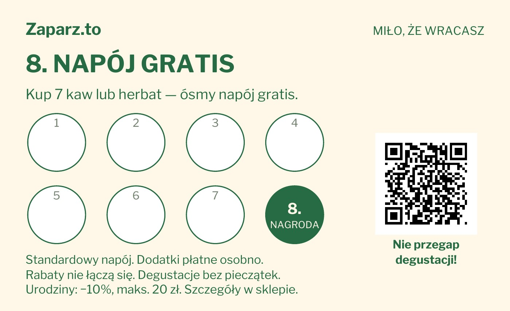
Drinks Rewards
Seven coffee or tea purchases lead to a free eighth standard drink. Numbered stamp spaces make progress visible.
Portfolio concepts. The address and opening hours are placeholders. Reward terms and QR destinations require confirmation before use.